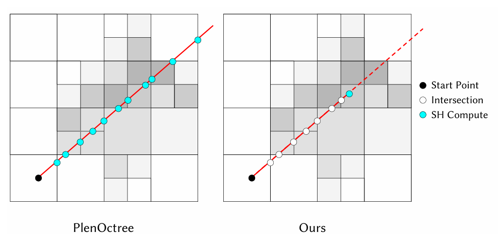

Research Assistant · Utah
Building robust, efficient methods for physics-based simulation. Still exploring.
Hi! This is Yuqi Meng (yoo-chee mung). I also go by Arias. I'm currently a research assistant at the University of Utah, advised by Prof. Yin Yang.
Before that, I received my B.S.E. in Computer Science from the University of Michigan and B.E. in Electrical and Computer Engineering from Shanghai Jiao Tong University. During my undergraduate years I was fortunate to be advised by Prof. Minchen Li, who introduced me to physics-based simulation.
News
2026.04Two papers accepted to SIGGRAPH 2026 — see you in LA this summer! :P
2026.03Starting my PhD at the University of Utah this fall. If you're in SLC and interested in graphics, I'm happy to chat! :)
Publications

Educations
2025.07 — nowResearch Assistant, University of Utah
2023.09 — 2025.05Undergraduate, University of Michigan
2021.09 — 2025.08Undergraduate, Shanghai Jiao Tong University
Teaching
Instructor Aide · University of Michigan
EECS 498-014: Graphics and Generative Models (Course development, Winter 2025)
Teaching Assistant · Shanghai Jiao Tong University
MATH2140J / MATH4170J: Linear Algebra (Fall 2022, Spring 2023)